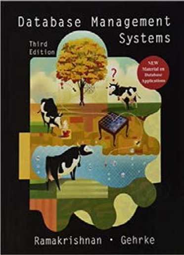

gantt
dateFormat M/DD/YYYY
axisFormat %W
section Topics
ER Models : m1, 1/7/2024, 3w
Rel. Algebra: m4, after m1, 2w
Normal forms: m5, after m4, 3w
SQL : m6, after m5, 4w
Adv. SQL: m7, after m6, 5w
I’m glad you’re here!!!!
CMSC 508 - Database Theory
- Semester course;
- 3 lecture hours. 3 credits.
- Prerequisite: CMSC 303 with a minimum grade of C.
Design and implementation of relational database systems. Emphasis is placed on entity-relationship diagrams, relational algebra, normal forms and normalization. Introduction to SQL. Discussion of physical level issues.
Students will be required to complete a design project and give an oral presentation of the project.
Recommended Textbooks


Canvas is the OFFICIAL platform
YOU are responsible for your own LEARNING. My role is GUIDE and CURATOR.
WE are working together as a TEAM so that at completion of the course, you are comfortable with designing and building databases.
ANYTHING posted to the course canvas is FAIR GAME to be tested. If I think it’s important enough to be shared as part of the course materials on Canvas, I believe that it’s important enough for you to be familiar with it and possibly tested on it.
I will OFTEN not be able to cover all the material relevant to a specific topic in class. That does NOT mean that it isn’t important. Even if I don’t complete the lecture slides during a class session, you should be familiar with ALL the material in the slides. ANYTHING in the lecture slides is FAIR GAME for testing.
Statement on Generative AI
Grades for the course are assigned based on YOUR work, not the work of chatgpt, bard or some other generative AI tool. Grades help YOU understand where you are on the journey towards mastery of any pile of material.
Generative AI can be a real asset in computing. You don’t need to memorize syntax, or struggle to hunt around to find some arcane code necessary to make your program work. But remember, it is supposed to be YOUR program.
Homework assignments are designed to give you practice using the tools to create programs. The focus of the homework assignments is on the higher level cognitive skills - designing, comparing, judging, analyzing, assessing. Use of Generative AI IS permitted on homework assignments and the semester project, in so much as it can help the coding go faster. YOU are responsible for the design and should be able to explain it to anyone that asks.
Quizzes are designed to test your knowledge of the course material. Use of Generative AI is NOT permitted on any of the quizzes.
See this document to learn more!
ABET Student Learning Outcomes
SLO1 - Analyze a complex computing problem and apply principles of computing and other relevant disciplines to identify solutions;
SLO2 - Design, implement and evaluate a computing-based solution to meet a given set of computing requirements in the context of the program’s discipline;
SLO3 - Communicate effectively in a variety of professional contexts;
SLO4 - Recognize professional responsibilities and make informed judgments in computing practice based on legal and ethical principles;
SLO5 - Function effectively as a member or leader of a team engaged in activities appropriate to the program’s discipline;
SLO6 - Apply computer science theory and software development fundamentals to produce computing-based solutions;
SLO7 - Acquire and apply new knowledge as needed, using appropriate learning strategies.
CMSC 408 Learning Outcomes
Demonstrate an understanding of the concepts underlying database design. (ABET SLO 1, SLO 7)
Analyze problems to identify data requirements, types and relations. (SLO 1)
Create E-R and relational designs from problem statements. (SLO 2)
Design data structures and functions to store and process the information. (SLO 2)
Design and implement databases using SQL language. (SLO 6)
Query and manipulate data using SQL language. (SLO 6)
Design and implement reports using data queried from a database. (SLO 3, SLO 6)
Work effectively as part of a team to design, implement and deploy a database-driven web application (SLO 5)
Communicate project requirements, design decisions, and progress effectively to team members and stakeholder (SLO 3)
Incorporate strategies to ensure safe and secure storage and access to the database. (SLO 4)
CMSC 408 - Tool sets and rationale
Tool sets we’ll be using
SQL, MySQL, and SQLITE
VSCODE and various extensions
Quarto, mermaid and graphviz
GIT, GH and GITHUB
Python, Pyenv and Poetry
Docker and docker compose
Expectations
This is a programming class. You will learn and improve through practice and reptition.
There will be LOTS of opportunity to practice.
We’ll be learning to “program/code” documentation and graphics using Quarto.
We’ll be learning how to communicate designs using ER diagrams and crows-feet diagrams.
We’ll be learning to create, retrieve, update and delete database objects using SQL.
We’ll be learning docker to containerize a database and application and automate the reptition.
Topics over time
The class organized in modules. The GANNT chart below highlights the topics and their order. Homework assignments reinforce topics discussed in class. Quizzes test understanding of the topics where appropriate. Material is presented in a way that complements the successful completion of the semester-long project.
Assessment and Grading
This will be a busy semester! There will be items due each week.
There will be a mix of activities
| Deliverable | Pct | Number of items |
|---|---|---|
| Homework | 40% | 10 submissions done individually |
| Quizzes | 30% | 5 quizzes taken on-line using respondus |
| Project | 30% | 12 submissions as part of a team |
Assessment and Grading
This will be a busy semester! There will be items due each week.
Homework Assignments
Homework assignments are done individually. Homeworks will be distributed using GITHUB classroom; a link will be provided in the Canvas assignment page. Homeworks will be submitted to Gradescope. Each assignment is worth 20 points. Rubrics will be provided. Homeworks will be written using Quarto. Homework 2 provides an opportunity to learn more about Quarto. Quarto will also be used for the semester project.
gantt
dateFormat M/DD/YYYY
axisFormat %U
section Homework<br/>(40%)
(first day of class): milestone, fdc1, 1/7/2024, 0d
DE Tool review: milestone, h1, 1/20/2024, 0d
HW 2: milestone, h2, 1/29/2024, 0d
HW 3: milestone, h3, 2/10/2024, 0d
HW 4: milestone, h4, 3/2/2024, 0d
hw 5: milestone, h5, 3/16/2024, 0d
hw 6: milestone, h6, 3/30/2024, 0d
hw 7: milestone, h7, 4/6/2024, 0d
homework 8: milestone, h8, 4/28/2024, 0d
Course Evaluation: milestone, h10, 4/28/2024, 0d
(last day of class): milestone, ldc2, 4/28/2024, 0d
Assessment and Grading
This will be a busy semester! There will be items due each week.
Quizzes
There will be four quizzes throughout the semester. Each quiz will be worth 30 points. Quizzes will be administered on-line usint the Respondus lockdown browser. It is the responsibility of the student to ensure that the technology works. Homework assignment 1 offers practice to work out the bugs. Quizzes will be administered during class time.
gantt
dateFormat M/DD/YYYY
axisFormat %U
section Quizzes<br/>(5 at 30%)
(first day of class): milestone, fdc1, 1/7/2024, 0d
Pre-class survey: milestone, q0, 1/7/2024, 0d
ER Models: milestone, q1, 1/23/2024, 0d
Relational algebra: milestone, q2, 2/11/2024, 0d
Normal forms: milestone, q3, 2/27/2024, 0d
SQL basics: milestone, q4, 3/19/2024, 0d
(last day of class): milestone, ldc2, 4/28/2024, 0d
Assessment and Grading
This will be a busy semester! There will be items due each week.
Semester-long project
Students will work in teams of 2 on a semester-long project. The project will require the students design and build a database backend presenting an API. The domain of the project is chosen by the students. Tools include SQL, python, flask, MySQL, Quarto, and others.
gantt
dateFormat M/DD/YYYY
axisFormat %U
section Project<br/>Deliverables<br/>(12 at 30%)
(first day of class): milestone, fdc1, 1/7/2024, 0d
Student introductions: milestone, p1, 1/11/2024,0d
Team formation: milestone, p2, 1/13/2024, 0d
Team update: milestone, p3, 1/18/2024, 0d
Team update: milestone, p4, 1/25/2024, 0d
Proposal video: milestone, p5, 2/3/2024, 0d
Team update: milestone, p6, 2/8/2024, 0d
Team update: milestone, p7, 2/22/2024, 0d
Design report: milestone, p8, 3/2/2024, 0d
Team update: milestone, p9, 3/8/2024, 0d
Web docker: milestone, p10, 3/23/2024, 0d
Team update: milestone, p11, 4/4/2024, 0d
Final submission: milestone, p12, 4/28/2024, 0d
(last day of class): milestone, ldc2, 4/28/2024, 0d
Assessment and Grading
This will be a busy semester! There will be items due each week.
Summary and grading schedule
Below are tables presenting the grading scheme and deliverable list for the class.
Deliverables
| Deliverable | Pct | Number of items |
|---|---|---|
| Homework | 40% | 10 submissions done individually |
| Quizzes | 30% | 5 quizzes taken on-line using respondus |
| Project | 30% | 12 submissions as part of a team |